Galerie
-
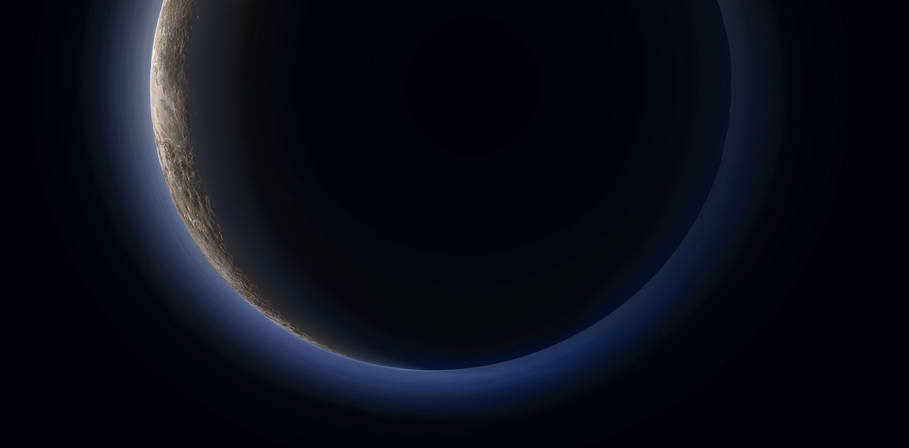
BRUME DE PLUTON
De nouvelles images transmises par la sonde New Horizons dévoile une brume bleue entourant Pluton et de l’eau glacée retrouvée à sa surface dans plusieurs petites régions exposées.
La liste des mystères autour de Pluton ne cesse de s’allonger à mesure que la sonde New Horizons transmet ses informations. La NASA a relayé la première photo couleur de l'atmosphère enveloppant la planète naine et le halo qui y apparait est tout à fait surprenant.
L’image montre en effet un mince panneau de brume bleue entourant un disque noir. De ce fait, les astronomes ont conclu que le ciel de Pluton à l’instar de la Terre était de cette couleur. "Qui se serait attendu à un ciel bleu dans la ceinture de Kuiper ? C'est superbe", a déclaré enthousiaste Alan Stern, directeur de la mission New Horizons.
© Michael Benson
Source data: NASA/Johns Hopkins University Applied Physics Laboratory/Southwest Research Institute/Michae -
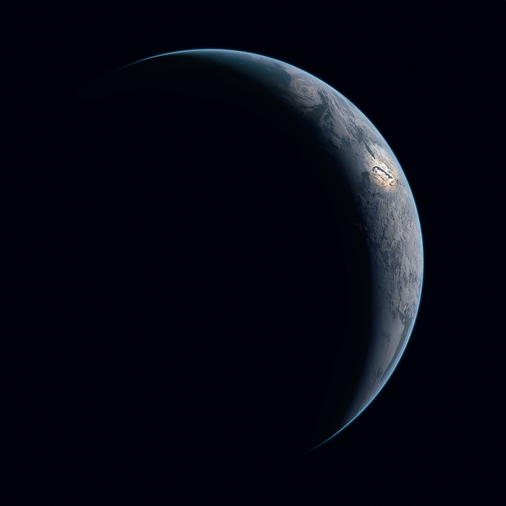
CROISSANT DE TERRE
Peu avant son passage au plus près de la Terre, le 13 novembre 2009, la sonde européenne Rosetta a réalisé ce cliché de la planète bleue. Le vaisseau automatique lancé en 2004 en direction de la comète Churyumov-Gerasimenko était alors à 633000 km de nous (soit environ moitié plus que la distance Terre-Lune).
La zone éclairée de ce croissant terrestre est centrée sur l'Antarctique, dont une partie des contours sont discernables entre les nuages.
© Michael Benson
Source data: NASA/Johns Hopkins University Applied Physics Laboratory/Southwest Research Institute/Michae -
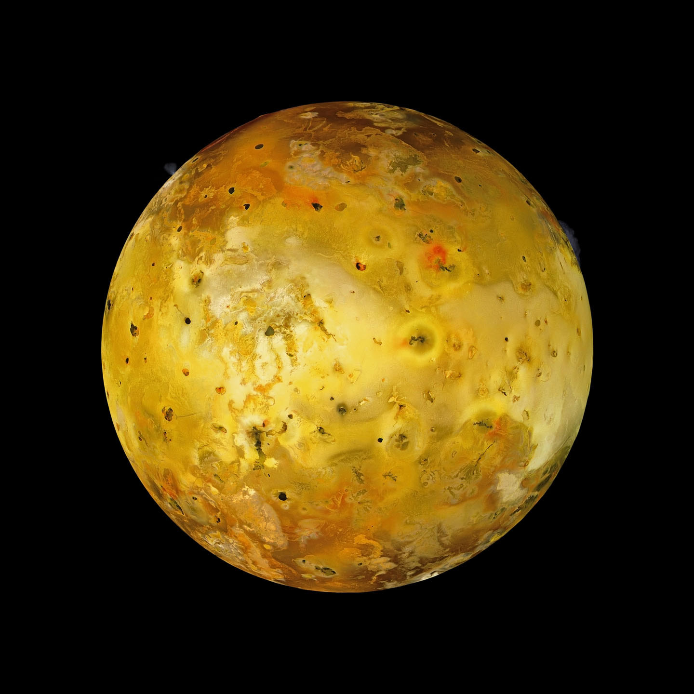
IO AVEC DEUX ERUPTIONS VISIBLES
Io est un satellite naturel de Jupiter et l'une des quatre lunes galiléennes, la plus proche de la planète. Avec plus de 400 volcans en activité, Io est l'objet le plus actif du Système solaire. Cette activité géologique est provoquée par les forces de marée de Jupiter.
© Michael Benson
Source data: NASA/Johns Hopkins University Applied Physics Laboratory/Southwest Research Institute/Michae -
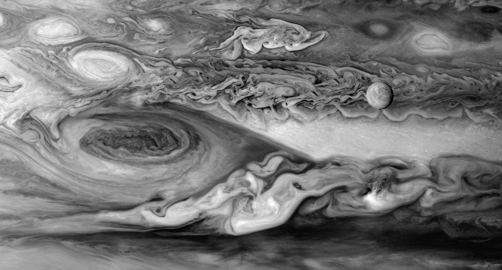
EUROPE ET LA GRANDE TACHE ROUGE DE JUPITER
Photo de Hubble: Un gros plan de Jupiter, la plus grande planète de notre système solaire. Hubble a suivi les changements de la grande tache rouge, tempête de Jupiter le 21 Avril 2014. Europe en premier plan.
© Michael Benson
Source data: NASA/Johns Hopkins University Applied Physics Laboratory/Southwest Research Institute/Michae -
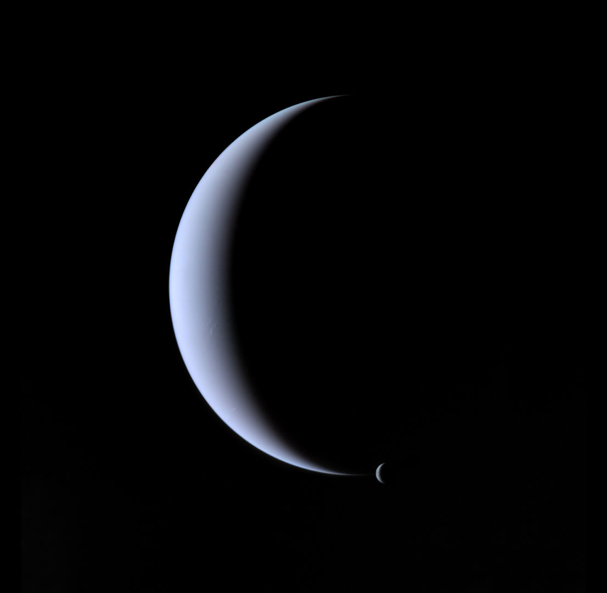
NEPTUNE ET TRITON
Les images de la sonde Voyager 2 ont révélé la présence sur Triton d’un volcanisme actif (présence de panaches atmosphériques) comparable à celui qu’on rencontre sur d’autres lunes du Système solaire comme Io (satellite de Jupiter) ou encore Encelade (qui gravite autour de Saturne).
Réalisée le 31 août 1989, cette image a sans doute fait rêver à l’époque le regretté André Brahic, l’astrophysicien français décédé le 15 mai 2016 et qui avait participé dans les années 1980 aux missions Voyager aux côtés de l’exobiologiste Carl Sagan.
© Michael Benson
Source data: NASA/Johns Hopkins University Applied Physics Laboratory/Southwest Research Institute/Michae -
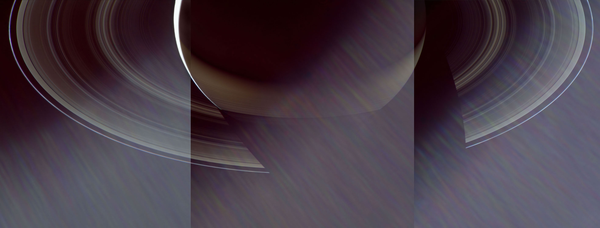
LUMIERE DU SOLEIL SUR SATURNE
Un nouveau jour se lève sur Saturne, la partie de la planète vu ici émerge une fois de plus dans la lumière du Soleil.
Avec une période de rotation d'environ 10 heures et 40 minutes, les jours et les nuits de Saturne sont beaucoup plus courtes que celles de la Terre.
L'image a été prise avec le vaisseau spatial Cassini caméra grand-angle le 23 août 2014 au moyen d'un filtre spectral qui admet de préférence des longueurs d'onde de la lumière proche infrarouge centrée à 939 nanomètres.
© Michael Benson
Source data: NASA/Johns Hopkins University Applied Physics Laboratory/Southwest Research Institute/Michae -
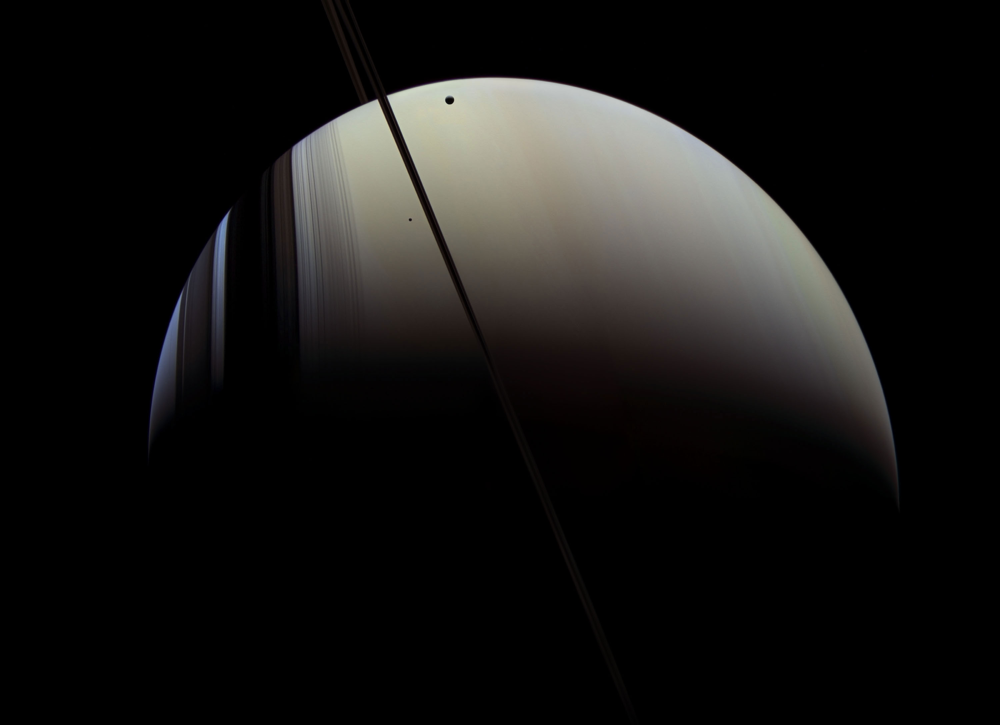
SATURN, MIMAS ET TETHYS
Saturne est entouré par ses anneaux (vu presque par la tranche dans cette image), ainsi que par les lunes Téthys et Mimas. Les ombres des anneaux enregistrées sur Saturne, se forment autour du pôle sud de Saturne.
La vue a été obtenu à une distance d'environ 1,1 million de miles (1,7 million de kilomètres) de Saturne et à un Soleil-Saturne-vaisseau spatial. La mission Cassini-Huygens est un projet coopératif de la NASA, l'Agence spatiale européenne et l'Agence spatiale italienne. Le Jet Propulsion Laboratory, une division de l'Institut de Technologie de Californie à Pasadena, gère la mission pour la science Mission Direction de la NASA, Washington, DC L'orbiteur Cassini et ses deux caméras embarquées ont été conçu, développé et assemblé au JPL. Le centre des opérations d'imagerie est basée à l'Institut des sciences spatiales à Boulder, au Colorado..
© Michael Benson
Source data: NASA/Johns Hopkins University Applied Physics Laboratory/Southwest Research Institute/Michae -
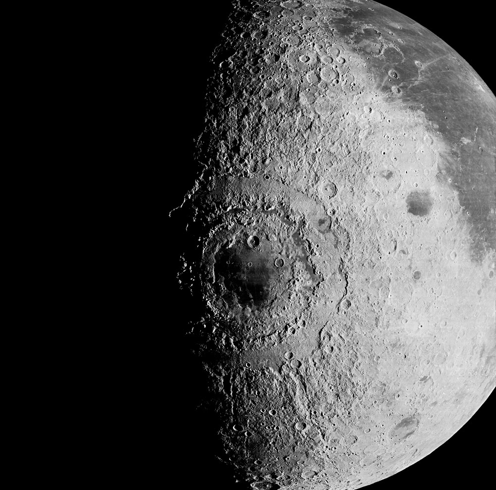
MARE ORIENTALE
Mare Orientale est ce que l'on appelle une mer lunaire. Elle a été créée par un impact d'une énorme météorite qui a soulevé les montagnes bordant le cratère. Le diamètre de celui-ci est de 900 km. Il s'agit de l'une des structures de la Lune les plus impressionnantes.
La Mare Orientale est ceinturée par deux chaînes de montagnes, l'une interne, de plus de 700 kilomètres de diamètre, les Montes Rook et l'autre externe, de plus de 900 kilomètres, les Montes Cordillera.
© Michael Benson
Source data: NASA/Johns Hopkins University Applied Physics Laboratory/Southwest Research Institute/Michae -
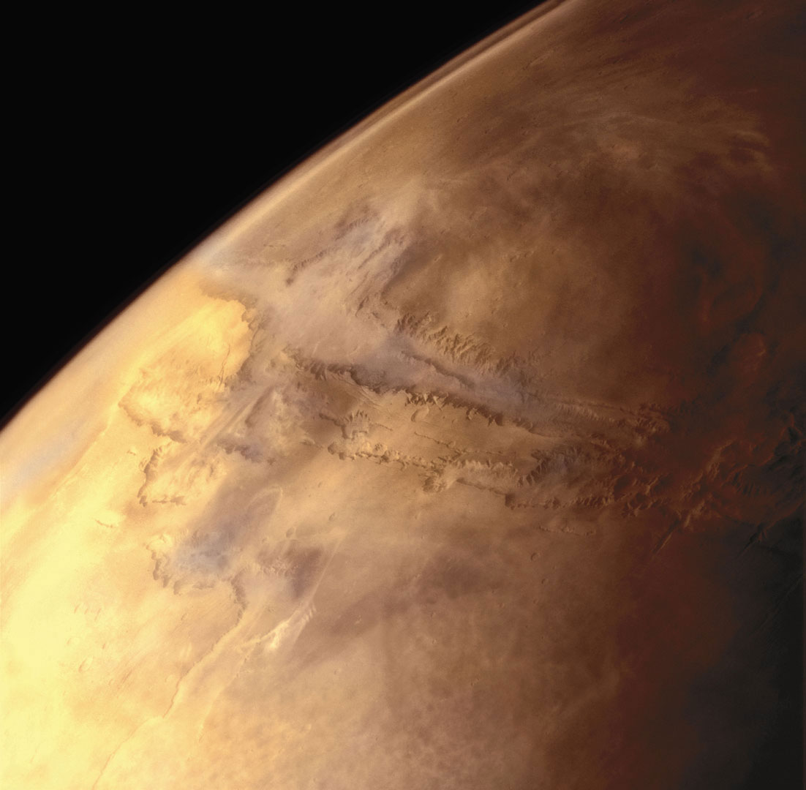
VALLES MARINERIS CANYON DE MARS
Valles Marineris (latin signifiant « les vallées de Mariner », en l'honneur de Mariner) est un vaste système de canyons situé à proximité de l'équateur de la planète Mars entre le renflement de Tharsis — notamment Syria Planum et Noctis Labyrinthus — à l'ouest, et Margaritifer Terra à l'est, dans les quadrangles de Phoenicis Lacus, de Coprates et de Margaritifer Sinus.
Centré par 13,7º S et 300,8º E et s'étendant sur 3 770 km, son plancher se situe couramment à 5 km sous le niveau de référence martien tandis que les plateaux qu'il traverse ont une altitude dépassant par endroits 5 km au-dessus du niveau de référence martien, ce qui conduit à des dénivelés généralement voisins de 10 000 m. Il s'agirait d'un énorme fossé d'effondrement élargi par l'érosion jusqu'à atteindre localement une largeur de 600 km2. En l'état actuel de nos connaissances, ce serait la plus importante structure de ce type dans le Système solaire.
© Michael Benson
Source data: NASA/Johns Hopkins University Applied Physics Laboratory/Southwest Research Institute/Michae -
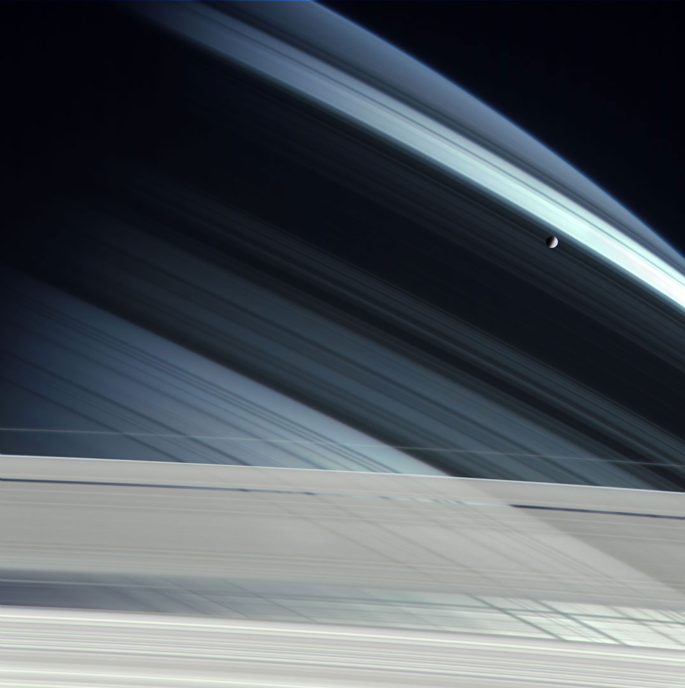
MIMAS AU-DESSUS DE SATURN
Mimas (S I Mimas) est un satellite naturel de Saturne, découvert en 1789 par William Herschel. Il tire son nom de Mimas, un Géant de la mythologie grecque.
Mimas est le satellite sphéroïde, parmi six autres, le plus loin de Saturne mais aussi le plus petit. Son diamètre varie de 382 à 418 km. Les 7 autres petits satellites connus situés entre son orbite et la surface de la planète géante ont tous un diamètre inférieur à 200 km, autrement dit d'une masse trop faible pour assurer une forme sphérique de cohésion. La faible densité de Mimas (1,17) laisse à penser qu'il est principalement constitué de glace d'eau avec une petite proportion de roches.
Sa masse fut calculée par Hermann Struve grâce à l'effet de résonance avec Téthys, qui induit des oscillations dans les longitudes de ces deux satellites. Le rapport de celles-ci est proportionnel au rapport des masses.
© Michael Benson
Source data: NASA/Johns Hopkins University Applied Physics Laboratory/Southwest Research Institute/Michae -
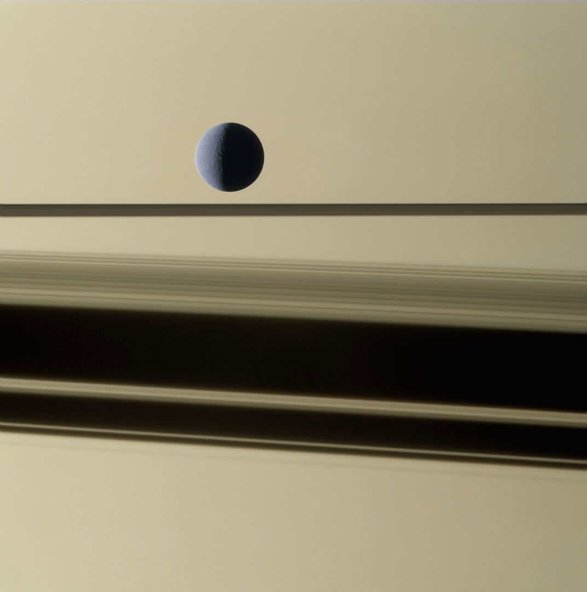
RHEA ET SATURNE
Rhéa est un satellite naturel de Saturne, le deuxième plus grand satellite de la planète par la taille après Titan. Il fut découvert en 1672 par l'italien, naturalisé français, Jean-Dominique Cassini.
© Michael Benson
Source data: NASA/Johns Hopkins University Applied Physics Laboratory/Southwest Research Institute/Michae -
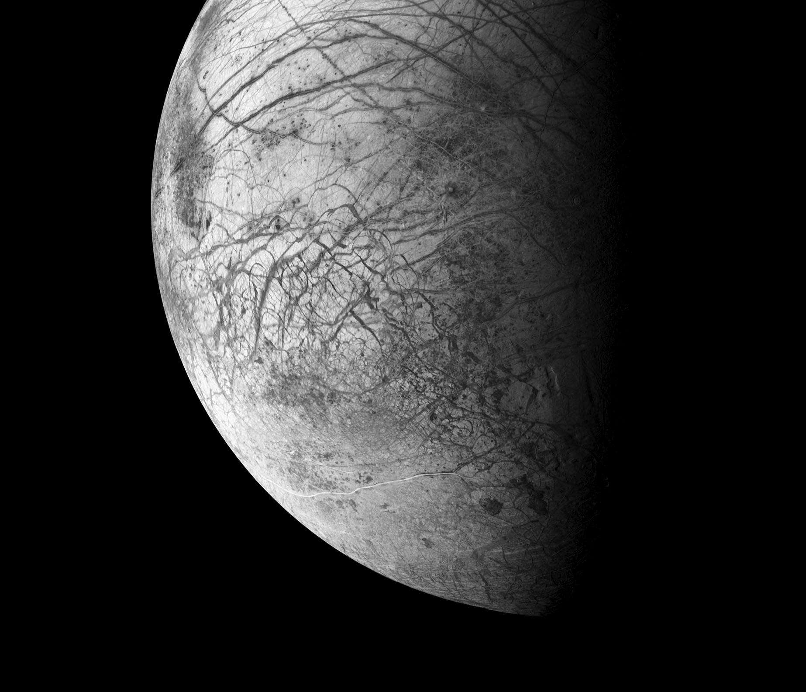
EUROPE, LA LUNE OCEAN DE JUPITER
Europe, officiellement Jupiter II Europe (en abrégé J II Europe, internationalement J II Europa) est un satellite naturel de Jupiter, le sixième par la distance et le deuxième parmi les satellites galiléens.
Avec un diamètre de 3 121 kilomètres, Europe est le quatrième plus gros satellite de Jupiter et le sixième du système solaire. Sa surface est composée de glace et se trouve être la plus lisse de tout le système solaire. Bien que sa température soit au maximum de -150 °C, on suppose qu'en dessous se trouve un océan liquide d'environ 90 kilomètres de profondeur. De plus, des geysers d'eau ont été détectés à sa surface. Ces éléments laissent à penser qu'Europe pourrait être habitable par certains organismes, bien que cette hypothèse ne soit pas encore vérifiée. À ce sujet, la NASA projette de lancer vers 2020-2030 une sonde spatiale dans le système de Jupiter, afin d'étudier en détail Europe, le projet ayant pour nom de code Europa Clipper
© Michael Benson
Source data: NASA/Johns Hopkins University Applied Physics Laboratory/Southwest Research Institute/Michae